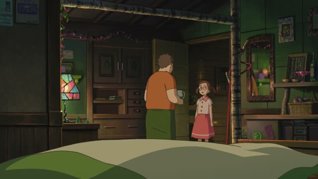
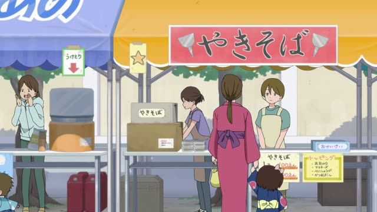
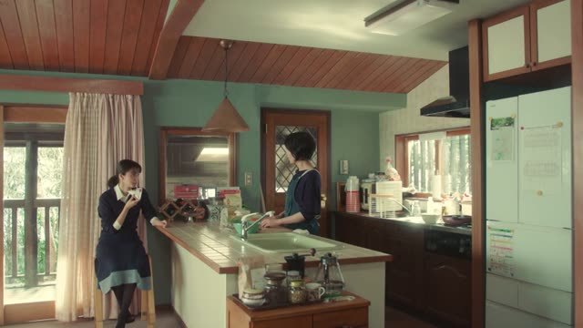

どう・いかが
| Polite | どうですか everyday polite いかがですか extra polite, for offers |
|---|---|
| Casual | どう |
Same meaning: "how, how about". Only the politeness changes.

Shirokuma Cafe · Season 1, Episode 5
どうしたの？何か考え事？
"What's wrong? Thinking about something?"
どう means "how" or "how about". It asks what something is like or how it went, not for a thing or a place.
On this card, どうした = "how did it go, what happened (to you)". It's the go-to line when someone looks off.
Polite: どうしましたか？ いかが is an extra polite どう, mostly for offers: コーヒーはいかがですか？
Kekkon Dekinai Otoko · Episode 2
今夜どうですか？
"How about tonight?"
どうですか is the polite どう, and it can suggest something. On this card, he invites her to dinner: 今夜 ("tonight") + どうですか.
Quick Examples
Your friend tries the ramen you recommended.
味はどう？
"How does it taste?"
CasualA teacher asks a new student.
日本の生活はどうですか？
"How's life in Japan?"
PoliteA café staff member, holding a jug.
お水はいかがですか？
"Would you like some water?"
いかが = very polite どう. Staff use it to offer things.
PolitePlanning to meet up.
明日はどう？
"How about tomorrow?"
どう also suggests something: "how about ___?"
CasualWith and without
何を見た？
"What did you watch?" Asks for a thing.
映画はどうだった？
"How was the movie?" Asks what it was like.
Examples from Media

When Marnie Was There
具合はどうですか？
"How are you feeling?"
具合 = "condition, how you feel". どうですか = "how is it?", the polite way to check on someone.

Shirokuma Cafe · Episode 22
駅前でポケットティッシュと一緒に配るのはどうでしょう？
"How about handing them out with pocket tissues in front of the station?"
どうでしょう = a soft, polite "how about ___?" for suggesting an idea.

Kotaro Lives Alone · Episode 4
わたあめいかがですか。
"Would you like some cotton candy?"
いかが: the extra polite どう, for offers.
Last Samurai Standing · Episode 3
どういう意味だ。
"What do you mean?"
どういう: "what kind of".
Teasing Master Takagi-san · Season 2, Episode 10
どうだ！
"How's that!"
Dungeon Meshi · Episode 3
どうした?
"What's wrong?"
Samurai Champloo · Episode 12
どうする。
"What'll you do?"

Quartet · Episode 9
仕事 どう？
"How's work?"
Further Reading
A Dictionary of Basic Japanese Grammar
Entry "dō" · pp. 114–115